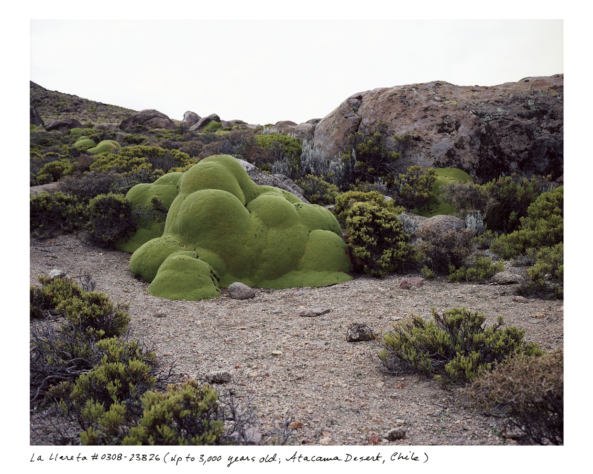
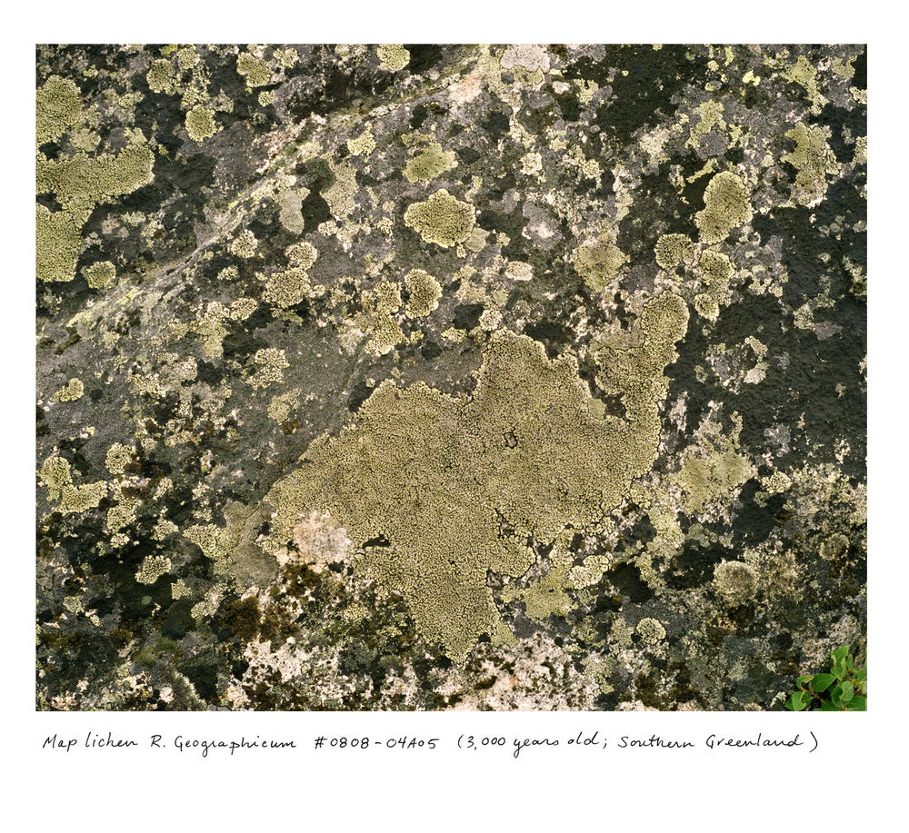

ARTS OF LIVING ON A DAMAGED PLANET
Arts of living are necessary because of threats to our survival.The livability of the earth is at stake—perhaps not for extremophile bacteria but for the many forms of life that humans and our companion species have learned to love. Mounting crises from chemical contamination, land grabs, and biodiversity loss are prompting interdisciplinary dialogues and urgent calls to action. The sheer magnitude of disruption has pushed scientists, artists, and humanists to reconsider relationships between nature and culture, subjects and objects of knowledge, heroes and ghosts of progress. A major challenge is how to think geological, biological, chemical, and cultural activity together, as a network of interactions with shared histories and unstable futures. There is something mythlike about this task: we consider anew the living and the dead; the ability to speak with invisible and cosmic beings; and the possibility of the end of the world.
What Kinds of Human Disturbance Can Life on Earth Bear?
Our era of human destruction has trained our eyes only on theimmediate promises of power and profits. This refusal of the past,and even the present, will condemn us to continue fouling our ownnests. How can we get back to the pasts we need to see the presentmore clearly? We call this return to multiple pasts, human and nothuman, “ghosts.” Every landscape is haunted by past ways of life. Wesee this clearly in the presence of plants whose animal seed-dispersersare no longer with us. Some plants have seeds so big that only big animals can carry them to new places to germinate. When these animalsbecame extinct, their plants could continue without them, but theyhave been unable to disperse their seeds very well. Their distributionis curtailed; their population dwindles. This is an example of what weare calling haunting.
Haunting is quite properly eerie: the presence of the past oftencan be felt only indirectly, and so we extend our senses beyond theircomfort zones. Human-made radiocesium has this uncanny quality: ittravels in water and soil; it gets inside plants and animals; we cannotsee it even as we learn to find its traces. It disturbs us in its indeterminacy; this is a quality of ghosts. As life-enhancing entanglements disappear from our landscapes, ghosts take their place. Some scientists argue that the rate of biological extinction is now several hundred times beyond its historical levels. We might lose a majority of all species by the end of the twenty-first century. The problem is not just the loss of individual species but of assemblages, some of which we may not even know about, some of which will not recover. Mass extinction could ensue from cascading effects. In an entangled world where bodies are tumbled into bodies (see our Monsters), extinction is a multispecies event. The extinction of a critical number of species would mean the destruction of long-evolving coordinations and interdependencies. While we gain plastic gyres and parking lots, we lose rainforests and coral reefs.
How many kinds of time—from longue durée evolutionary rapprochements to the quick boom and bust of investment capital—arewrapped up in these encounters? Minor forms of space and timemerge with great ones. An extinction is a local event as well as a globalone. Extinction is a breakdown of coordinations that has unintendedand reverberating effects.Some earth systems scientists describe the Anthropocene as the“Great Acceleration,” the sharp rise in the destructive environmentaleffects of human industry since the second half of the twentieth century.3The massive increase in carbon dioxide, methane, and nitrateemissions into the atmosphere from industrialized agriculture, mineral extraction, petroleum-driven production, and globalized shipping/transportation networks has outpaced all other rhythms oflife. Yet the Great Acceleration is best understood through immersion in many small and situated rhythms. Big stories take their formfrom seemingly minor contingencies, asymmetrical encounters, andmoments of indeterminacy. Landscapes show us.
Beautiful monsters: Terra in the Cyanocene
Sometimes we can see the ghosts of relentless waste and manufactured poverty in the forms of stinking garbage and leaky sewers. Butthere are also ghosts we cannot see and those we chose to forget. Theydon’t sit still. They leave traces; they disturb our plans. They crackthrough pavements. They tell us about stretches of ancient time andcontemporary layerings of time, collapsed together in landscapes. The synchronizations put into motion by contemporary technology—not just radioactivity but also global pollution, the movements ofcapital, climate change, and many more—look different when assessedfrom the perspective of planetary damage. They show us ghosts, themultiple stories of landscape effects. Whereas Progress trained us tokeep moving forward, to look up to an apex at the end of a horizon,ghosts show us multiple unruly temporalities.